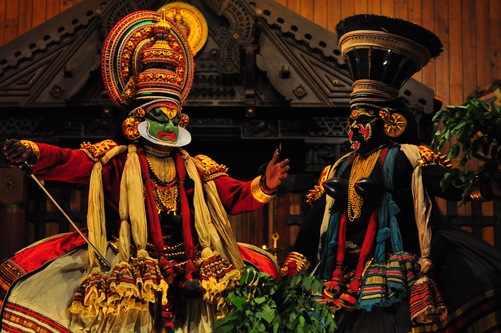

KeralaTradition
ART FORMS
KATHAKALI

Kathakali is a harmonious combination of five forms of fine art:
1). Literature (Sahithyam)
2). Music (Sangeetham)
3). Painting (Chithram)
4). Acting (Natyam)
5). Dance (Nritham)
Kathakali is one of the oldest theatre forms in the world. It originated in the area of southwestern India now known as the state of Kerala.
Kathakali is a group presentation, in which dancers take various roles in performances traditionally based on themes from Hindu mythology,
especially the two epics, the Ramayana and the Mahabharata.
INDIAN CLASSICAL MUSIC

Indian classical music is categorized under two genres. These are Hindustani and Carnatic. Broadly speaking, Carnatic music developed in the
south of the country, while Hindustani is indigenous to the north.
Carnatic Music
It is the classical music of Southern India. The basic form is a monophonic song with improvised variations. There are 72 basic scales on the
octave, and a rich variety of melodic motion. Both melodic and rhythmic structures are varied and compelling. This is one of the world's oldest
& richest musical traditions.
Hindustani music
It is based on the raga system. A raga is a melodic scale, consisting of notes from the basic seven known as sa, re, ga, ma pa, dha, and ni.
Apart from sa and pa which are constant, the other notes may be in major or minor tone, and this gives rise to innumerable combinations.
Ten basic scales or thaats are recognized, and other ragas are considered to have evolved from these. A raga must contain a minimum of five
notes.
THREE STATES OF CLASSICAL DANCE
Bharathanatyam
Bharathanatyam is a classical dance form of South India, said to be originated in Thanjavoor of Tamil Nadu. Bharatanatyam It was known as
"Daasiyattam" since performed by Devadasies in temples of Tamil Nadu long ago. The name 'Bharatanatyam' is derived from three basic concepts
of Bhava, Raga and Thaala. The modern Bharatanatyam was systematically regularized by well known 'Thanjavoor Brothers', Ponnayya, Chinnayya,
Sivanandam and Vativelu.
Mohiniyattam
Mohiniyattam is a dance form said to have originated in Kerala. It is closely related to Bharathanatyam of Tamil Nadu, Mohiniyattamwhich was
originally called 'Dasiyattam'. Originated as the temple dance performed by Devadasis, it portrays feminine love in its myriad forms - carnal,
devotional and maternal- with accent more on Lasya and Bhava. In the main items Cholkettu, Padavarnam and Padam, Mudras and facial expressions
are more important than the rhythmic steps. Costumes and ornaments of Mohiniyattam have much in common with female characters of Koodiyattam
and Kathakali.
Kutchipudi
The art of creating very large pictures Kalamezhuthuon floor, with coloured powders have been in vogue for ages as a ritual art form. It is
typically Indian as it is a harmonic blend of Arian, Dravidian and Tribal traditions. As an art form it has found a significant place among
our rich spectrum of fine arts. In most other parts of India this art exists as a domestic routine of Hindus, who consider it auspicious to
draw certain patterns at the door step and courtyard to welcome a deity into the house. It is called by names like Rangoli, Kolam etc.
Kalamezhuthu is unique form of this art found only in Kerala. Here it is essentially a temple art. The patterns to be drawn and the colours
chosen are traditionally stipulated, and the tradition is strictly adhered to.